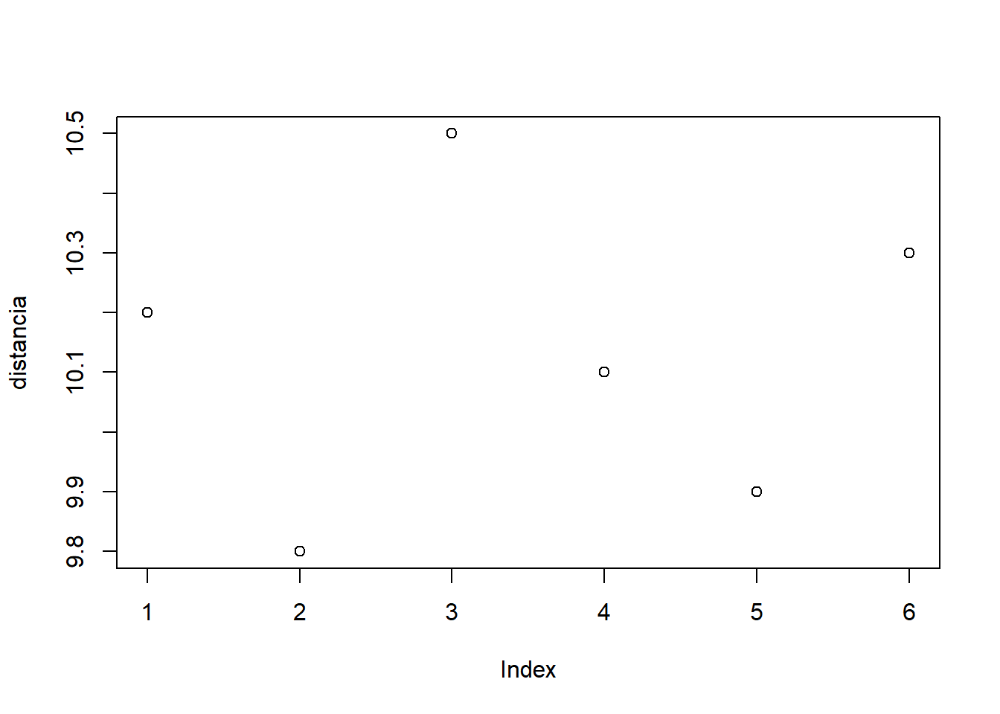

Código
distancia <- c(10.2, 9.8, 10.5, 10.1, 9.9, 10.3)
plot(distancia)


Estatística e Probabilidade
Prof. Ben Dêivide (DEFIM/CAP/UFSJ)
Descreva o contexto da prática e sua importância.
Exemplo: análise da variabilidade em experimentos físicos utilizando uma catapulta.
Descrever o objetivo principal da prática.
| Nome | Nota |
|---|---|
| Jair | X |
| Wesley | Y |
Apresente os conceitos principais:
\[\bar{x} = \frac{1}{n}\sum_{i=1}^{n} x_i\]
Descreva como o experimento foi realizado.
Apresente e interprete os resultados obtidos a partir dos dados coletados.
Em seguida, discuta os resultados à luz dos conceitos teóricos:
Procure não apenas descrever, mas interpretar os dados.
Depois de inserido as informaçõe no arquivo referencias.bib, use:
distancia <- c(10.2, 9.8, 10.5, 10.1, 9.9, 10.3)
plot(distancia)
alfafa <- read.delim("/media/ben10/Backup/BEN_PROJ_GIT/relatorio-eait/dados/alfafa.txt")
alfafa TRAT BLOCO PROD
1 A I 2.89
2 A II 2.88
3 A III 1.88
4 A IV 2.90
5 A V 2.20
6 A VI 2.65
7 B I 1.58
8 B II 1.28
9 B III 1.22
10 B IV 1.21
11 B V 1.30
12 B VI 1.66
13 C I 2.29
14 C II 2.98
15 C III 1.55
16 C IV 1.95
17 C V 1.15
18 C VI 1.12
19 D I 2.56
20 D II 2.00
21 D III 1.82
22 D IV 2.20
23 D V 1.33
24 D VI 1.00De acordo com os dados a média da produção de alfafa é 1.9 kg/ha.
library(knitr)
library(kableExtra)
alfafa <- read.delim("/media/ben10/Backup/BEN_PROJ_GIT/relatorio-eait/dados/alfafa.txt")
# Tabela básica
kable(alfafa, caption = "Dados da Alfafa")| TRAT | BLOCO | PROD |
|---|---|---|
| A | I | 2.89 |
| A | II | 2.88 |
| A | III | 1.88 |
| A | IV | 2.90 |
| A | V | 2.20 |
| A | VI | 2.65 |
| B | I | 1.58 |
| B | II | 1.28 |
| B | III | 1.22 |
| B | IV | 1.21 |
| B | V | 1.30 |
| B | VI | 1.66 |
| C | I | 2.29 |
| C | II | 2.98 |
| C | III | 1.55 |
| C | IV | 1.95 |
| C | V | 1.15 |
| C | VI | 1.12 |
| D | I | 2.56 |
| D | II | 2.00 |
| D | III | 1.82 |
| D | IV | 2.20 |
| D | V | 1.33 |
| D | VI | 1.00 |
# Tabela mais elaborada com kableExtra
kable(alfafa,
caption = "Dados da Alfafa",
booktabs = TRUE,
align = "c") %>%
kable_styling(bootstrap_options = c("striped", "hover", "condensed"),
full_width = FALSE) %>%
scroll_box(width = "100%", height = "400px")| TRAT | BLOCO | PROD |
|---|---|---|
| A | I | 2.89 |
| A | II | 2.88 |
| A | III | 1.88 |
| A | IV | 2.90 |
| A | V | 2.20 |
| A | VI | 2.65 |
| B | I | 1.58 |
| B | II | 1.28 |
| B | III | 1.22 |
| B | IV | 1.21 |
| B | V | 1.30 |
| B | VI | 1.66 |
| C | I | 2.29 |
| C | II | 2.98 |
| C | III | 1.55 |
| C | IV | 1.95 |
| C | V | 1.15 |
| C | VI | 1.12 |
| D | I | 2.56 |
| D | II | 2.00 |
| D | III | 1.82 |
| D | IV | 2.20 |
| D | V | 1.33 |
| D | VI | 1.00 |
Apresente uma síntese dos principais pontos observados no experimento.
Evite repetir apenas os resultados; foque nas conclusões e reflexões sobre a prática realizada.
Acesse Quarto.